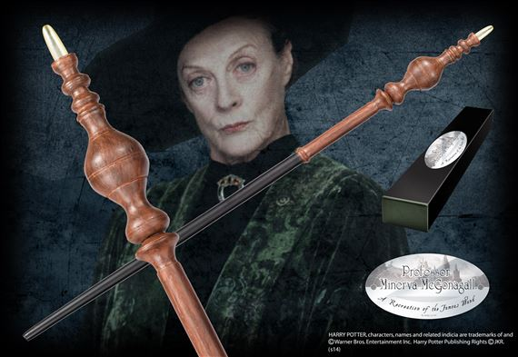

Minerva McGonagall

Minerva McGonagall est un personnage central de la saga Harry Potter, elle est professeur de métamorphose, mais aussi directrice de la maison Gryffondor et également vice-directrice de Poudlard puisqu’elle est une grande amie d’Albus Dumbledore. Ce n’est que plus tard qu’elle endossera le prestigieux rôle de directrice de Poudlard, succédant à Dumbledore.
C’est une sorcière très puissante, elle est notamment animagus (sous forme d’un chat), fait partie de l’Ordre du Phoenix depuis sa création et a participé aux grandes guerres, en partie la Bataille de Poudlard, mais il s’agit surtout de l’une des premières à combattre le Seigneur des Ténèbres.
Strict, exigeante mais juste, c’est un professeur tant craint que respectée par ses élèves et un personnage auquel on s’attache rapidement notamment grâce à sa bienveillance envers les personnages principaux.
Sa baguette est constituée de bois de sapin, contient un ventricule de dragon et mesure 23.75 centimètres.
Matière : bois de sapin
Longueur : 23,75cm